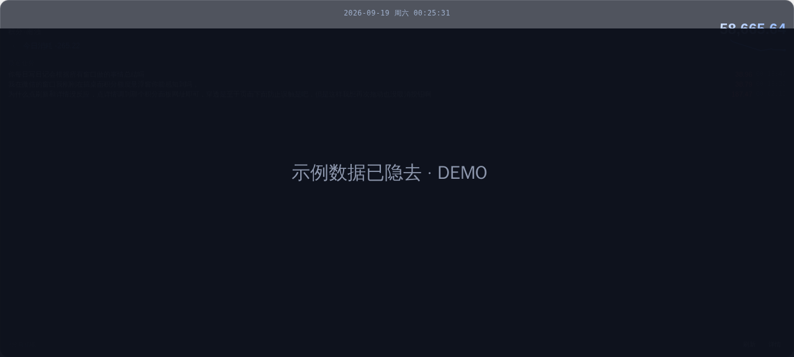
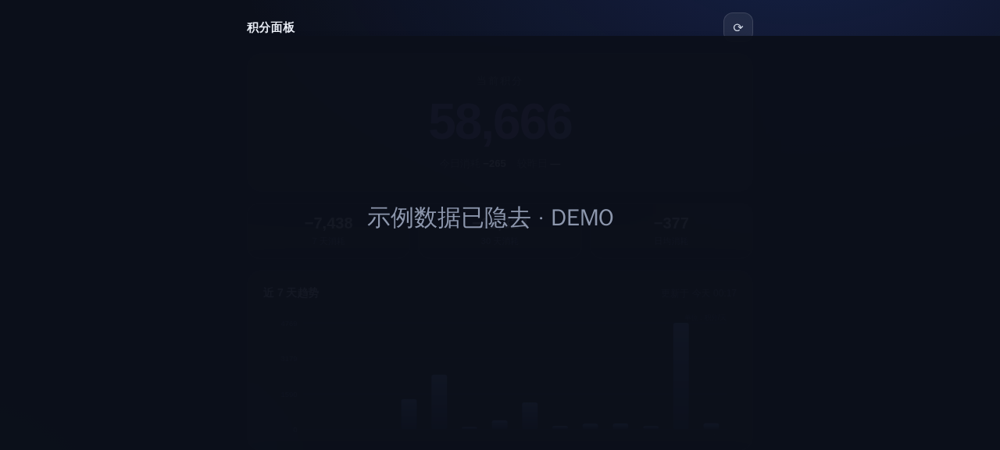

点击穿透后鼠标直达底层应用，不打断游戏/写作；光标移入自动武装，右键一键恢复。
拖到哪就记到哪（widget.config.json），下次启动原地出现。
复刻官方 refresh 端点，token 滚动续 180 天，理论上永久免重登。
全部数据落自己服务器（JSON 落盘），密钥墙 + 密钥不进 URL。
Python 标准库实现，systemd 常驻，无第三方包。
悬浮窗页面由服务器实时下发，改功能不用重新打包 exe。
① 服务器跑 worker.py（systemd 常驻）→ ② Caddy 挂 /points/* →
③ Electron 包解压双击 exe → ④ F12 抄一次 cookie 粘进面板，此后全自动。
细节见 GitHub 仓库 README（含 AgentMore Web API 逆向要点：时间戳校验位算法 / X-Sign 签名 / WAF 浏览器头 / refresh 滚动续期）。